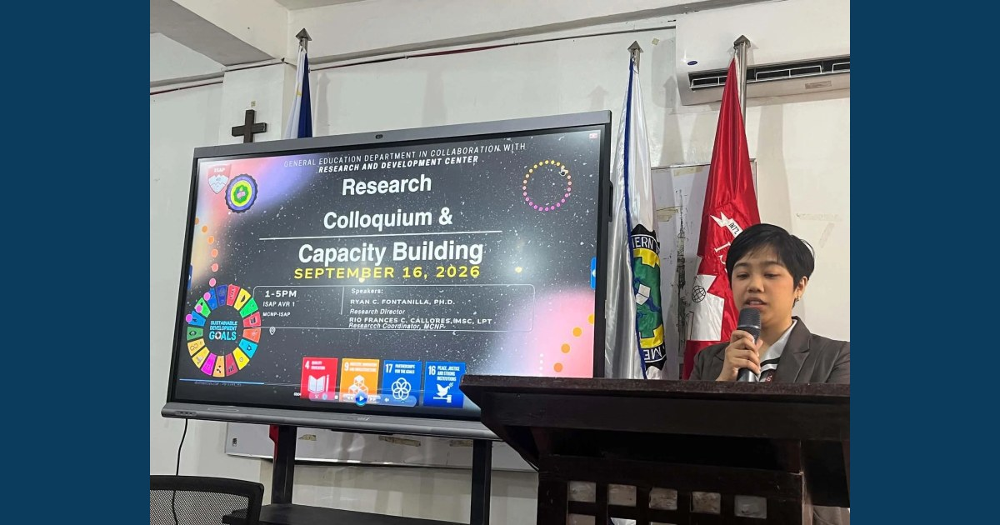

From Problems to Purpose: Strengthening Research Capacity

The General Education Department, in collaboration with the MCNP–ISAP Research and Development Center, conducted a Research Colloquium and Capacity-Building Program on September 16, 2026. The activity featured Dr. Ryan C. Fontanilla, who discussed A Practical Guide to Research Problem Formulation , and Ms. Rio Frances C. Callores, Research Coordinator, who facilitated the Orientation on the Institutional Research Process.
Read full article